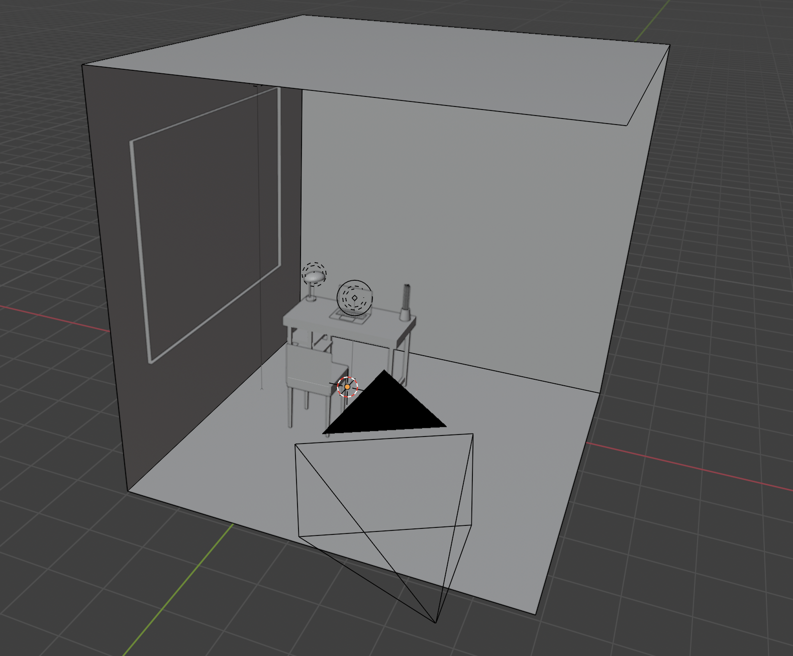
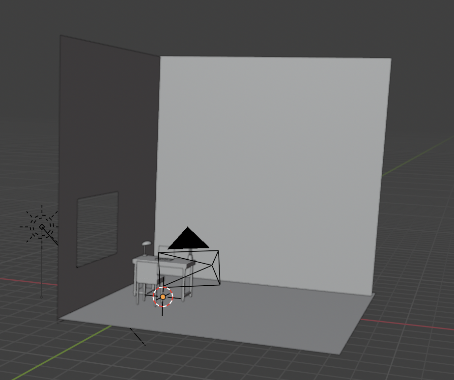
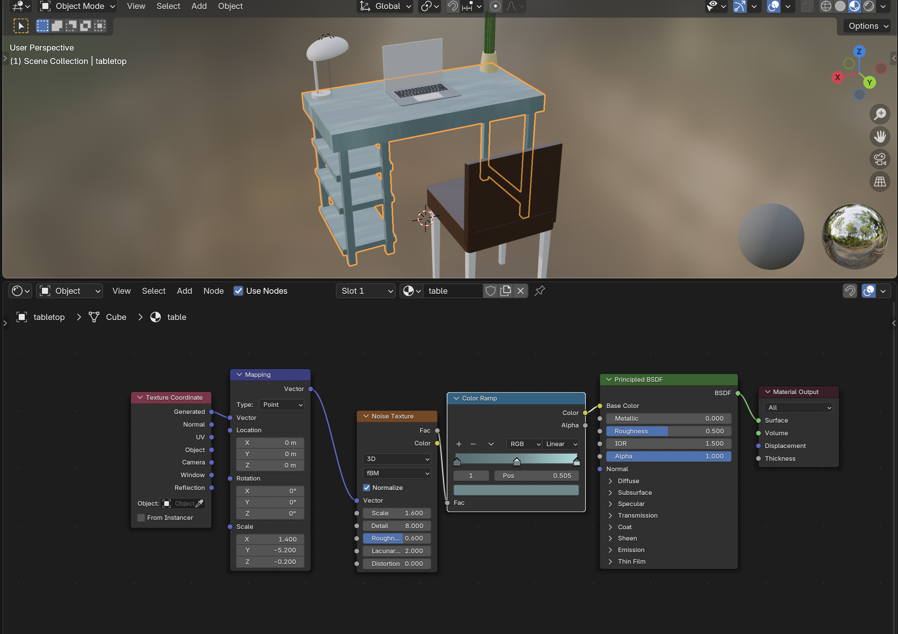
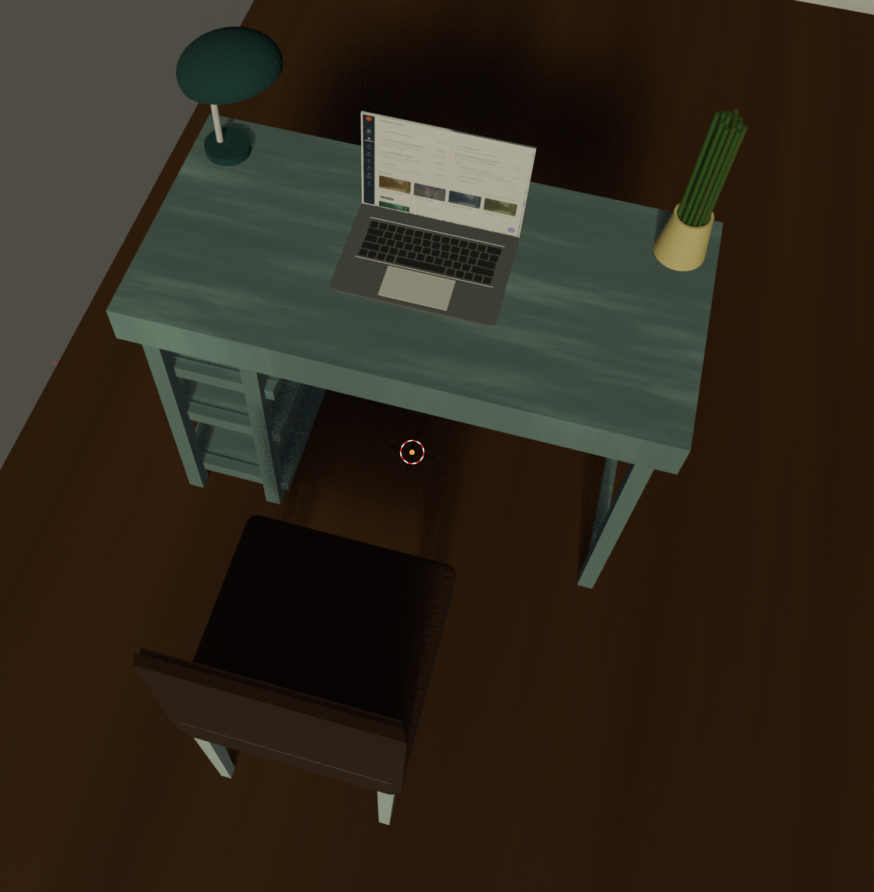
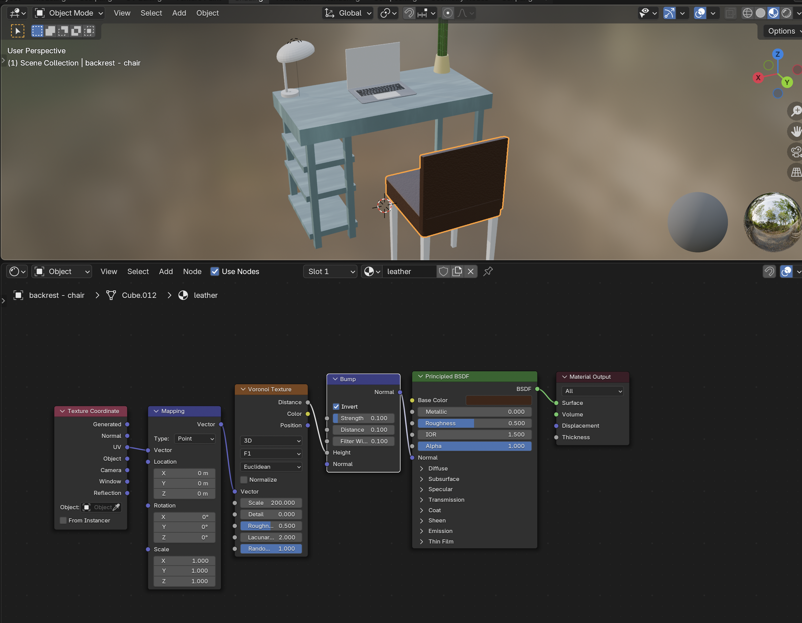
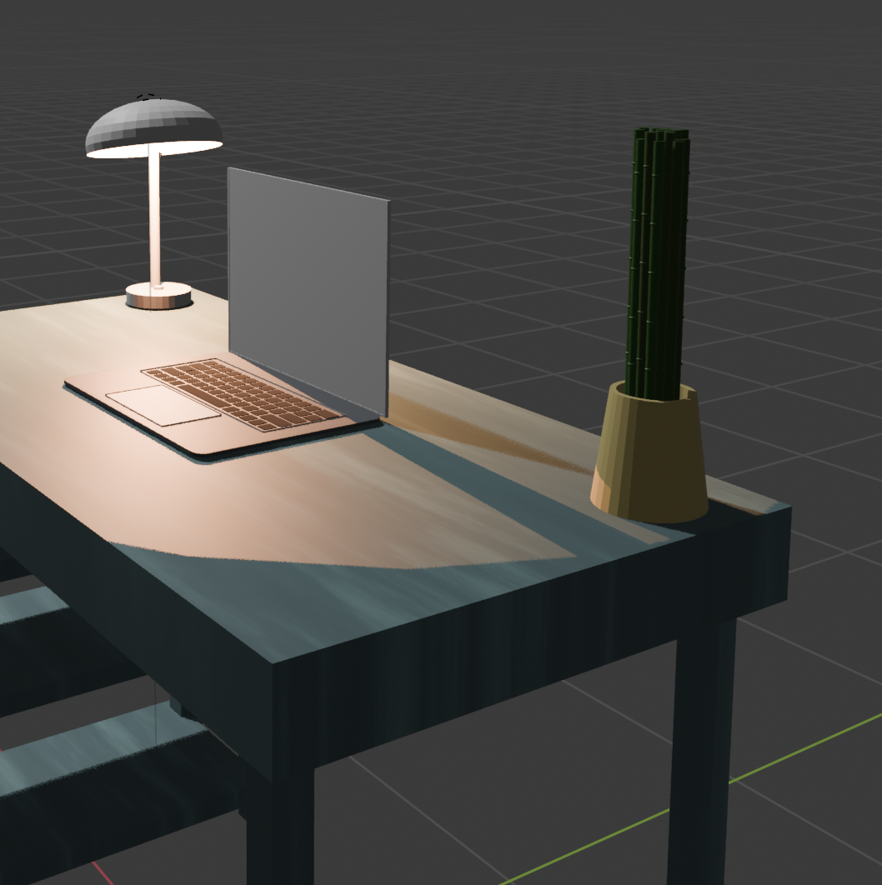
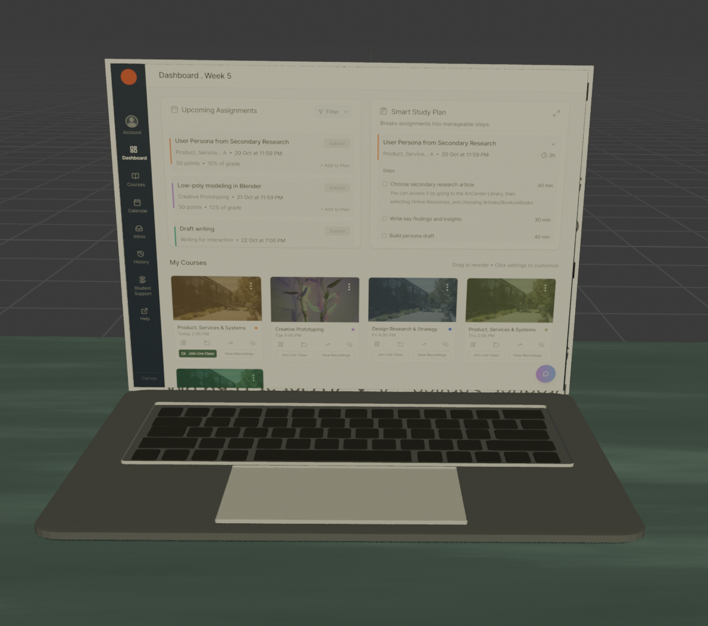
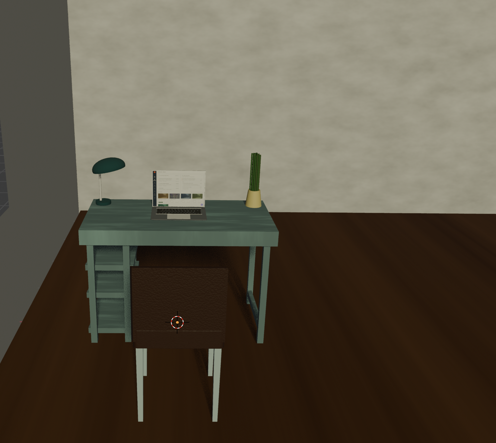

This work continues from my Week 5 Blender project, where I first started building the room scene.
I started creating my scene by imagining the context in which users would interact with my redesigned Canvas desktop dashboard. The end users are mostly undergraduate and graduate students, so I decided to build a student room setting — a simple, functional workspace with a table, chair, desk lamp, bamboo plant (in progress), and a laptop (in progress). This is the environment where students would use the desktop version of Canvas.
I first added a cube, scaled it, and deleted two of its faces to make it look like a room. I also used the boolean modifier (Difference) on the left wall to cut out a window shape.
Later I changed the approach: I deleted that box and rebuilt the room using three planes for the walls and floor.
I hid the floor and walls so I could focus on the furniture. Then I started adding materials in the Shading tab.
For the table, I gave it a wood texture with a blue/green tint using Shading tab.
 For the chair, I added a leather material to the sitting area and chosed grayish-blue color for chair legs.
I kept going and added materials to the pot and the bamboo plant.
For the laptop I modeled earlier, and the keyboard I made using cubes + an Array modifier, I also added materials. I used Image Texture instead of just a color and put in the Canvas dashboard PNG that I exported from Figma, so the laptop screen shows that image.
I also added materials to the room itself. I gave the walls some texture, and I made the floor look like wood.
